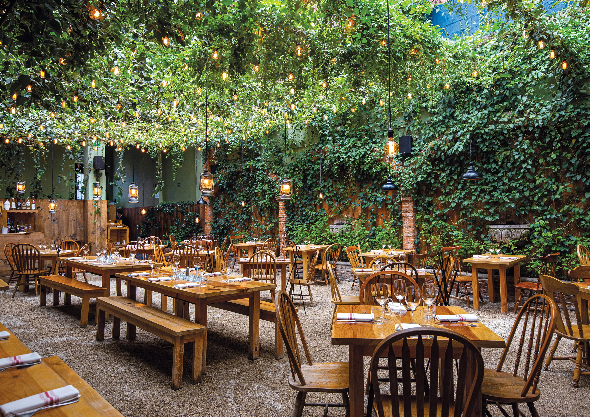

MI COCINA VEGETARIANA

Los conceptos que orientan nuestro proyecto son "mente, conciencia y equilibrio"
¿Quienes somos?
Mi cocina vegetariana es un proyecto que incluye ingredientes de origen agroecológico/ orgánicos y de elaboración propia.